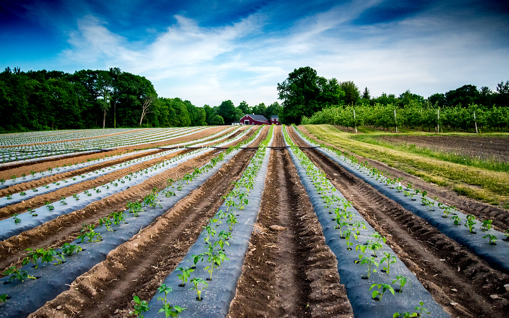

Local Supplier Partners
Vernon Family Farm
Pasture-raised meats and local provisions from Newfields, NH. A cornerstone of our farm-to-table approach.
Alta Vista Farm
A sustainable homestead dedicated to seasonal crops, located in western Massachusetts.

Brookdale Farm
Historic, family-owned orchard and produce farm supporting New England with fresh fruit and vegetables.
Jasper Hill Farm
World-renowned cheesemakers focused on quality and regenerative agriculture in Vermont.